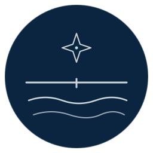

Operational EcologyOperational tools for conservation
Built to be trusted with a partner's life's work.
Conservation research generates more imagery, audio, and field data every year than the people doing the work can process. The bottleneck is rarely the question — it is the time it takes to extract the signal from data already collected by people who already know what they are looking for.
Operational Ecology builds production-grade machine-learning systems that close that gap. The biologists and technicians whose careers are devoted to these populations are the experts; our role is to amplify that work, without replacing or overshadowing it.
The work
A family of calibrated tools.
Named after maritime instruments — a pelorus, an almanac, a Plimsoll line, a scar watch.
The choice is deliberate. These were not gadgets; they were calibrated tools that
practitioners staked their judgement on, often in bad conditions. That is the standard
we hold ourselves to.
Offerings
Start small. Scale when it's working.
Rescue audit
2 weeks
A fixed-scope engagement to map your workflow, identify failure points, and produce a
practical 30 / 60 / 90 plan.
- Current-state map and bottlenecks
- Priority backlog and risk register
- Funder-ready written summary
Onboarding sprint
2–4 weeks
Bring a dataset online: ingestion, standards, QA, and handoff. Suited to new
populations, new sensors, or new partnerships.
- Ingest and normalise metadata
- QA report and known limits
- Reproducible pipeline and docs
Model readiness
1–2 weeks
A clear answer to "is this model working?" and "what do we do next?" without committing
to months of training.
- Evaluation protocol and metrics
- Error analysis and failure modes
- Data strategy and next steps
Longer engagements are available for teams ready to operationalise end-to-end workflows —
data pipelines, reproducibility, monitoring, and deployment hygiene.
How we work
Trust earned by being right.
Calibrated, honest about limits, durable. The same commitments carry through every
project we ship.
Honest evaluation by default
Where ground truth is incomplete, we say so. Models that don't know they're uncertain
don't ship; calibration, intervals, abstention, and per-sample diagnostics live in every
result.
Semi-automated, not autonomous
The default stance is triage and amplification of expert review, not autonomous
replacement — unless and until evidence justifies otherwise.
Reproducible by construction
Frozen SHAs, versioned datasets, run manifests, committed dependency locks. A reported
number is always traceable to the exact code and data that produced it.
Trust & safety
Operational hygiene partners and funders can verify.
Data handling
We work inside your existing accounts and permissions with least-privilege access —
data does not leave the systems it already lives in.
- NDA-friendly
- No data export without explicit approval
- Audit trails where the substrate supports them
Operational handoff
Every engagement ends with written documentation and a clear operating procedure your
team can run after we leave.
- Runbooks and checklists
- Monitoring and alerting recommendations
- Reproducibility guardrails
About
Pragmatic, field-aware engineering.
Operational Ecology is a small product organisation focused on environmental data
systems and machine learning. We build "boring" infrastructure on purpose: workflows
that are safe, auditable, and
maintainable, with clear documentation and handoff.
The work is led by an applied machine-learning engineer and researcher in conservation-focused computer vision and ecological data pipelines — experienced with long-term datasets, photo-identification workflows, and operational systems that must survive beyond a single grant cycle.
Lineage: FIN-PRINT (individual killer-whale recognition), finwave.io (population-scale photo-ID workflows used by working biologists today), and the FinScar publication (Barnhill et al., Marine Mammal Science, 2025).
The work is led by an applied machine-learning engineer and researcher in conservation-focused computer vision and ecological data pipelines — experienced with long-term datasets, photo-identification workflows, and operational systems that must survive beyond a single grant cycle.
Lineage: FIN-PRINT (individual killer-whale recognition), finwave.io (population-scale photo-ID workflows used by working biologists today), and the FinScar publication (Barnhill et al., Marine Mammal Science, 2025).
Approach
Trust by design.
-
ConfidenceDefine metrics, measure outcomes, make reliability visible.
-
SafetyLeast-privilege access, careful data handling, audit trails.
-
KnowledgeDocumentation, runbooks, and training so your team can operate independently.
Start
Two-week rescue audit.
-
You getA current-state map, a prioritised 30 / 60 / 90 plan, and a funder-ready summary.
-
Best forTeams with growing datasets, manual workflows, or stalled ML initiatives.
-
How it startsA short call → access to existing docs and systems → a clear, written output.
Nonprofit-friendly scope and pricing. Fixed-fee deposit / milestone terms available on request.